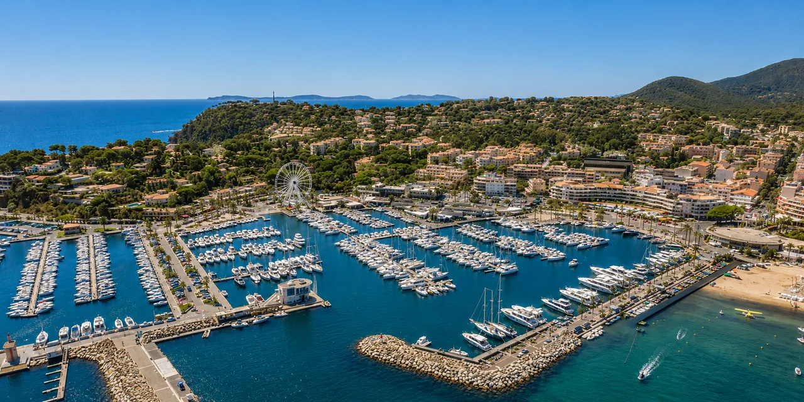
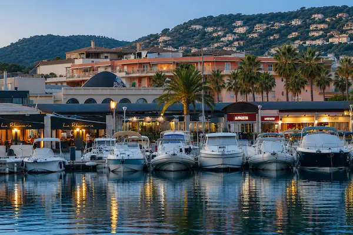
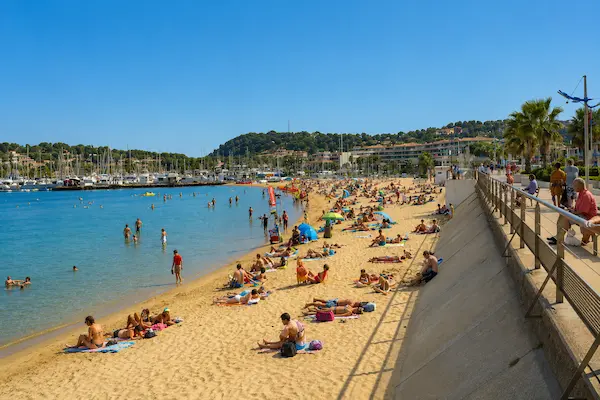

Web Essentiel
À partir de600€
- ✓ 3 pages professionnelles
- ✓ 100% responsive mobile
- ✓ Bouton appel / contact direct
- ✓ SEO local Cavalaire inclus
- ✓ Propriété 100% à vous
Restaurant, agence immobilière, conciergerie, coiffeur ou artisan à Cavalaire-sur-Mer : vos clients cherchent sur Google avant de vous appeler. Je crée et maintiens des sites internet sur mesure, codés à la main, qui génèrent des contacts toute l'année — en saison comme hors saison.

Avec 7 500 habitants permanents et une capacité d'accueil qui explose en été, Cavalaire-sur-Mer est l'une des stations balnéaires les plus dynamiques du Var. Restaurants, agences immobilières, conciergeries, commerces, artisans — une économie locale qui tourne toute l'année, pas seulement en haute saison.
Pourtant, la majorité des professionnels de Cavalaire n'exploite pas encore le potentiel du web. Pas de site, ou un site vieilli de 2015 : c'est votre opportunité. Être le premier restaurant, la première agence immobilière, la première conciergerie de Cavalaire avec un site moderne et rapide, c'est capter les clients que vos concurrents laissent partir.
Je suis développeur web basé à Saint-Tropez, à 25 minutes de Cavalaire. Je crée et maintiens des sites internet sur mesure pour les professionnels de Cavalaire-sur-Mer — sans template, sans WordPress, 100% code à la main.
Chaque jour sans site optimisé à Cavalaire, ce sont des clients qui appellent votre concurrent après l'avoir trouvé sur Google.Obtenir mon devis gratuit →

De la création à la maintenance mensuelle — je m'occupe de tout pour les professionnels de Cavalaire-sur-Mer. Un seul interlocuteur, local, disponible.
Site vitrine sur mesure, codé à la main. 3 à 7 pages, 100% responsive mobile, SEO local Cavalaire intégré dès le départ. Livraison en 4 à 5 jours pour un site essentiel.
Votre site est lent, vieilli ou invisible sur Google ? Je le refonds entièrement — nouveau design, nouveau code, nouvelles performances. Score PageSpeed avant/après garanti.
Forfaits mensuels à partir de 60€ — modifications, sauvegardes, mises à jour sécurité, monitoring. Votre site reste rapide et sécurisé 365 jours par an.
Chaque site est pensé pour votre secteur à Cavalaire-sur-Mer et optimisé pour les requêtes Google spécifiques à la station — en haute saison et toute l'année.
Listings filtrables, fiches biens, galerie premium. Visible sur "agence immobilière Cavalaire", "villa Cavalaire-sur-Mer", "appartement vue mer Var 83". Cible acheteurs, locataires et investisseurs.
→ Page agence immo Restaurant & bar CavalaireMenu en ligne, galerie appétissante, réservation directe. Référencé sur "restaurant Cavalaire-sur-Mer", "bar bord de mer Var 83". Booste les couverts toute l'année.
→ Page restaurant Conciergerie & services saisonniersSite multilingue, formulaire de demande de services, interface haut de gamme. Référencé sur "conciergerie Cavalaire", "conciergerie Golfe Saint-Tropez", "services saisonniers Var 83".
→ Page conciergerie Salon de coiffure CavalaireGalerie de réalisations, prise de rendez-vous directe. Référencé sur "coiffeur Cavalaire-sur-Mer", "salon beauté Var 83", "coiffeur Golfe Saint-Tropez". Attire clients locaux et touristes.
→ Page coiffeur Électricien & artisan CavalaireBouton d'urgence mobile, formulaire devis. Référencé sur "électricien Cavalaire", "artisan Var 83", "dépannage Golfe Saint-Tropez". Génère des appels immédiats.
→ Voir la démo artisan Serrurier & urgences CavalairePremier résultat sur "serrurier Cavalaire", "ouverture porte Var 83". Bouton appel urgent visible immédiatement sur mobile. Conversion maximale.
→ Page serrurierVotre activité n'est pas listée ? J'accompagne tous les professionnels de Cavalaire-sur-Mer — hôtels, campings, photographes, piscinistes, paysagistes, prestataires événementiels… Chaque site internet est conçu sur mesure.
Discutons de votre projet →Cavalaire-sur-Mer n'est pas seulement une station estivale. Avec 7 500 résidents permanents, un port de plaisance fréquenté toute l'année et un tissu commercial dense, la ville génère une activité économique continue sur 12 mois. Et cette économie locale passe de plus en plus par Google.
Quand un vacancier cherche "restaurant Cavalaire-sur-Mer" depuis son téléphone sur la plage, ou qu'un propriétaire tape "agence immobilière Cavalaire" pour vendre sa villa — qui apparaît en premier ? Le professionnel avec un site internet optimisé. Pas forcément le meilleur, mais le plus visible.


Créer un site internet, c'est bien. Le maintenir à jour, sécurisé et performant, c'est ce qui fait la différence sur le long terme. À Cavalaire-sur-Mer, où la saison touristique représente une partie importante du chiffre d'affaires annuel, votre site doit être parfait du 1er juin au 30 septembre — et visible le reste de l'année.
Je propose des forfaits de maintenance site internet à Cavalaire à partir de 60€/mois — modifications mensuelles, sauvegardes automatiques, mises à jour sécurité, monitoring des performances. Votre site reste rapide (100/100 PageSpeed), sécurisé et à jour sans que vous ayez à vous en occuper.
Basé à Saint-Tropez, je suis à 25 minutes de Cavalaire-sur-Mer. Je me déplace chez vous pour la première réunion. Je connais le marché local, la saisonnalité du Golfe et les spécificités économiques de chaque commune.
J'interviens également dans les communes voisines : Ramatuelle, Cogolin, Grimaud, Sainte-Maxime et Gassin. Chaque ville a sa page dédiée avec un SEO spécifique.
Un site internet non maintenu perd en performance, en sécurité et en référencement. Mes forfaits maintenance à Cavalaire vous garantissent un site toujours optimal — avant, pendant et après la saison.
Sans engagement · Résiliation à tout moment · Idéal pour les pros de Cavalaire avec une activité saisonnière
Ces exemples illustrent le niveau de qualité que je crée pour les professionnels de Cavalaire-sur-Mer et du Golfe de Saint-Tropez.

7 pages, multilingue FR/EN/IT, réservation WhatsApp, galerie immersive. 100/100 PageSpeed. La référence pour les restaurants du front de mer à Cavalaire.
Voir la démo → → Étude de cas complète
6 pages, 100/100 PageSpeed. Bouton d'urgence, devis en ligne. SEO "électricien Cavalaire", "artisan Golfe Saint-Tropez". Résultats en 4 semaines.
Voir la démo → → Étude de cas complète
Galerie de réalisations, prise de rendez-vous directe. 100/100 PageSpeed. Référencé sur "coiffeur Cavalaire-sur-Mer" et "salon Golfe Saint-Tropez".
Voir la démo → → Étude de cas complète
Restaurant, agence immo, conciergerie, artisan… Devis gratuit sous 24h. Maquette avant de commencer. Maintenance mensuelle disponible.
Demander un devis gratuit →H1 géolocalisé, Schema.org LocalBusiness, Google Business Profile configuré. Vous apparaissez sur "votre activité + Cavalaire" et "votre activité + Golfe Saint-Tropez" en 4 à 8 semaines.
Zéro WordPress, code à la main. Vos clients cherchent depuis la plage en 4G — votre site charge en moins d'une seconde. Google récompense la vitesse.
À partir de 60€/mois, je maintiens votre site : modifications, sauvegardes, sécurité. Idéal pour les pros de Cavalaire avec une forte activité saisonnière.
Basé à Saint-Tropez, je connais le marché de Cavalaire et du Golfe. Je me déplace chez vous. Pas une agence distante — un développeur web local.
J'optimise votre site pour les deux régimes de Cavalaire : le pic estival avec les touristes et le flux régulier hors saison avec les résidents permanents.
Code, contenu, domaine — tout vous appartient. Aucun enfermement dans une plateforme. La maintenance est proposée, jamais obligatoire.
On discute de votre activité à Cavalaire, votre clientèle, vos objectifs saisonniers. Devis clair et détaillé sous 24h. Gratuit, sans engagement.
Direction artistique adaptée à votre activité et votre clientèle de Cavalaire. Vous validez avant tout développement. Aucune surprise.
Code à la main, optimisé pour Cavalaire-sur-Mer et le Golfe. Tests mobile, vitesse, accessibilité.
Lancement, Google Search Console, Google Business Profile Cavalaire. Premiers contacts Google en 4 à 8 semaines. Maintenance disponible après.
Un devis clair avant de commencer. Vous restez propriétaire à 100%. Maintenance optionnelle disponible dès la mise en ligne.
Basé à Saint-Tropez, je crée et maintiens des sites internet pour les professionnels de Cavalaire et des communes voisines. Chaque ville a sa page dédiée avec un SEO spécifique.
Création site internet Cavalaire · Développeur web Cavalaire-sur-Mer · Maintenance site internet Cavalaire · Saint-Tropez · Ramatuelle · Cogolin · Sainte-Maxime · Grimaud · Var (83)
La création d'un site internet à Cavalaire commence à partir de 600€ pour un site vitrine 3 pages (responsive, SEO Cavalaire inclus). Un site Premium 6 pages est à partir de 1 300€. Devis gratuit sous 24h, sans engagement.
Oui, c'est un service clé pour les pros de Cavalaire. Je propose deux forfaits : Basique à 60€/mois (2h de modifications, sauvegardes, mises à jour sécurité, support email) et Pro à 120€/mois (4h, sauvegardes hebdomadaires, support prioritaire 24h, compte-rendu mensuel). Sans engagement, résiliation à tout moment.
Oui. Chaque site est optimisé pour le référencement local Cavalaire dès la mise en ligne : H1 géolocalisé Cavalaire-sur-Mer, Schema.org LocalBusiness, Google Business Profile configuré, sitemap soumis à Google Search Console. Résultats visibles en 4 à 8 semaines.
Oui. Basé à Saint-Tropez, je suis à 25 minutes de Cavalaire. Je me déplace chez vous pour la première réunion. La consultation est gratuite — en présentiel à Cavalaire ou en visioconférence.
Oui. J'accompagne les professionnels de tout le Golfe : Saint-Tropez, Ramatuelle, Cogolin, Sainte-Maxime et Grimaud. Chaque commune a sa propre page SEO dédiée.
Basé à Saint-Tropez, à 25 minutes de Cavalaire, je crée et maintiens des sites internet qui génèrent des contacts en saison et hors saison. Devis gratuit sous 24h, maquette avant de commencer.
Devis 100% gratuit · Sans engagement · Réponse sous 24h · Déplacement à Cavalaire-sur-Mer · Maintenance site internet disponible · Var 83